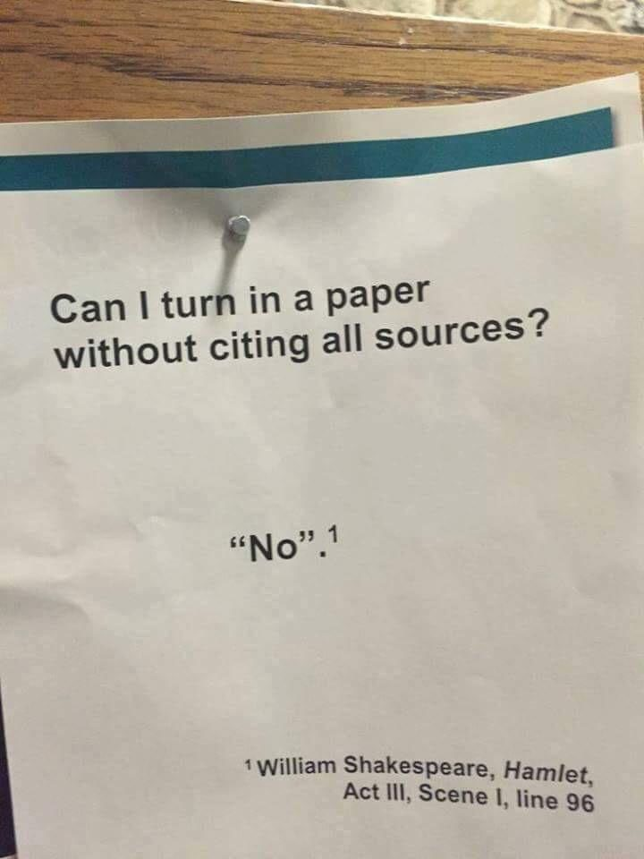
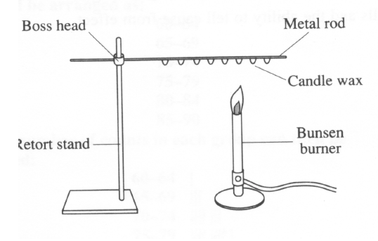
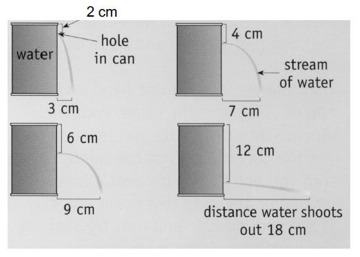
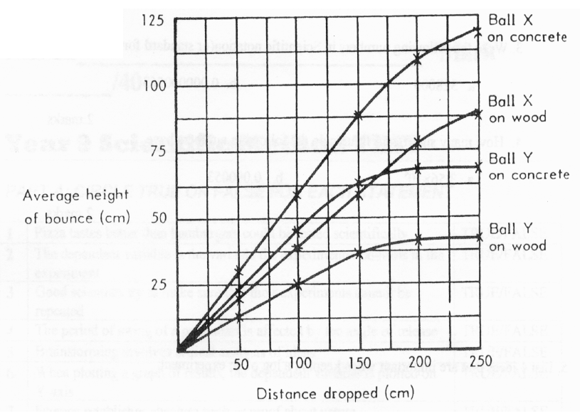

Communicating
There is no separate "communicating" stage: communication is found in every section of a report. It involves explaining things clearly, using scientific language correctly, presenting evidence-based arguments, and acknowledging information from other sources.
- Use Harvard or APA referencing to give a full reference for each secondary source used.
- Use in-line citations (not footnotes) in the text, and list the references in alphabetical order in the "References" section.
- There are many online reference generators.

Questions
Does heat travel through an iron rod as fast as through a copper rod? This could be tested by placing candle wax evenly along the rods. As one end of each rod is heated, the wax melts and drops off. Identify the IV, DV and three controlled variables.

IV: the type of metal (iron or copper).
DV: the time taken for the wax to melt and drop off at a set distance (or how far along the rod the wax has melted after a set time).
CVs (any three): length and thickness of the rods; amount and spacing of the wax; distance of the flame from the rods / same Bunsen burner and flame setting; starting temperature of the rods.
Brent has lost his entire experimental report, except for this diagram. a. Identify the IV, DV and three controlled variables. b. Describe the graph you would expect to draw.

- IV: the depth of water above the hole (height of water in the can above the hole, in cm). DV: the horizontal distance the stream of water shoots out (cm). CVs: size of the hole; height of the hole above the ground/landing surface; type of liquid (water at the same temperature); same can.
- A scatter graph with the depth of water on the x-axis and the distance the water shoots on the y-axis, showing a positive trend: as the depth increases, the distance increases.
3. Beriberi
In 1887, a strange nerve disease attacked people in the Dutch East Indies. The disease was beriberi. Symptoms included weakness and loss of appetite, and victims often died of heart failure. Scientists thought the disease might be caused by bacteria. They injected chickens with bacteria from the blood of patients with beriberi, and the injected chickens became sick with beriberi. However, so did a group of chickens that were not injected. One of the scientists, Dr Eijkman, noticed something: before the experiment, all the chickens had eaten whole-grain rice, but during the experiment they were fed polished rice. Dr Eijkman found that polished rice lacked thiamine, a vitamin needed for good health.
State the problem faced by the scientists.
What causes beriberi (a deadly nerve disease), so that it can be prevented or treated?
What was the original hypothesis?
Beriberi is caused by bacteria.
How was the original hypothesis tested?
Chickens were injected with bacteria from the blood of patients with beriberi, and the scientists observed whether they developed beriberi.
Should the hypothesis be supported or rejected based on the experiment?
Chickens that were not injected also got beriberi, so the bacteria were not the cause. The injected and non-injected chickens acted like a control group, showing that something else (their diet) was responsible.
What should the new hypothesis be, and how would you test it?
New hypothesis: beriberi is caused by a lack of thiamine in the diet (from eating only polished rice).
Test: divide chickens into two groups, keeping all other conditions the same. Feed one group polished rice only and the other group whole-grain rice (or polished rice with added thiamine). Compare how many chickens in each group develop beriberi. Use large groups and repeat the experiment.
4. Bounce height graph

Identify the three independent variables and the dependent variable, and comment on the trend shown for each IV.
IV1: distance dropped (cm). As the drop distance increases, the average bounce height increases.
IV2: type of ball (X or Y). Ball X bounces higher than Ball Y on the same surface.
IV3: surface (concrete or wood). Each ball bounces higher on concrete than on wood.
DV: average height of bounce (cm).